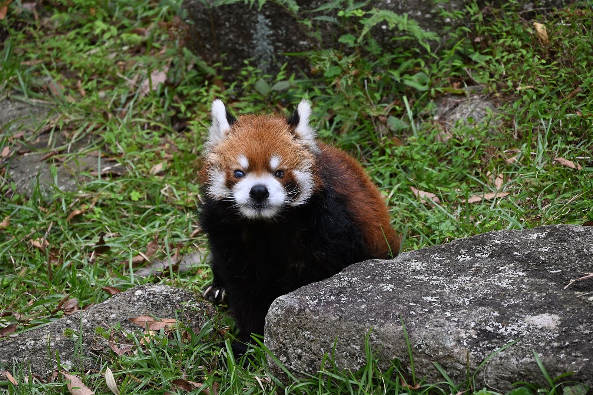
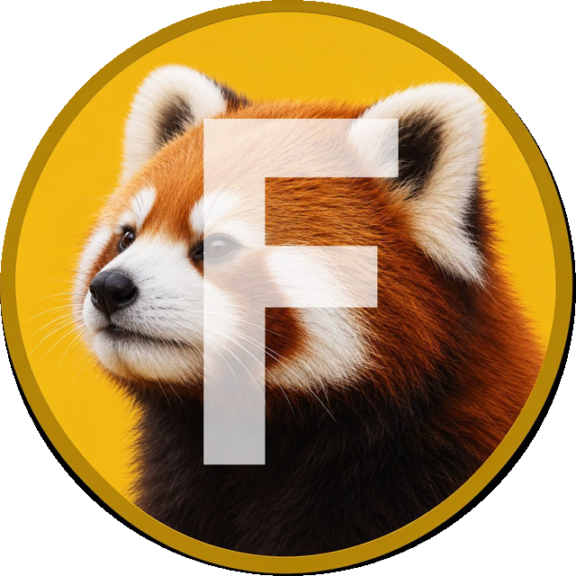
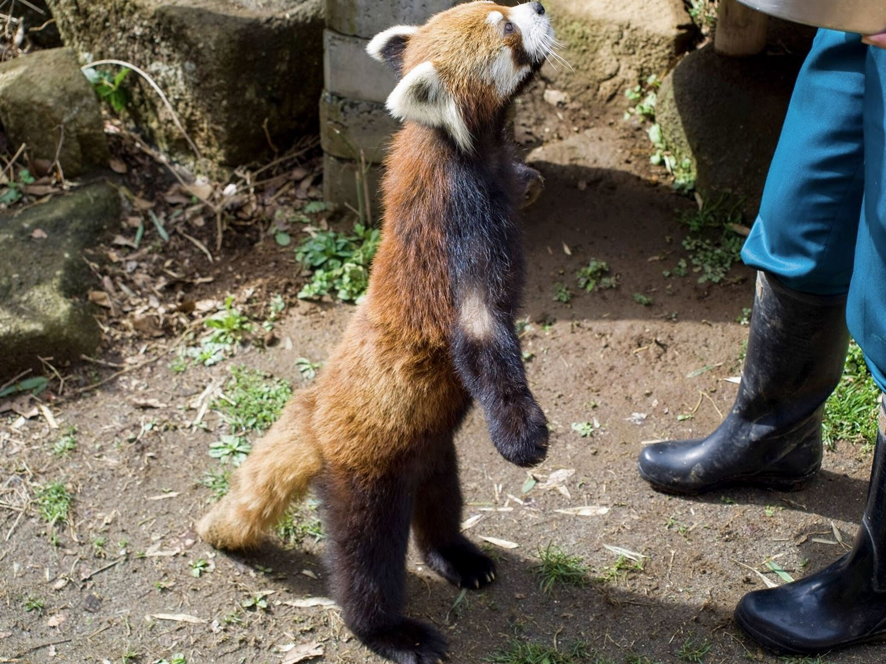
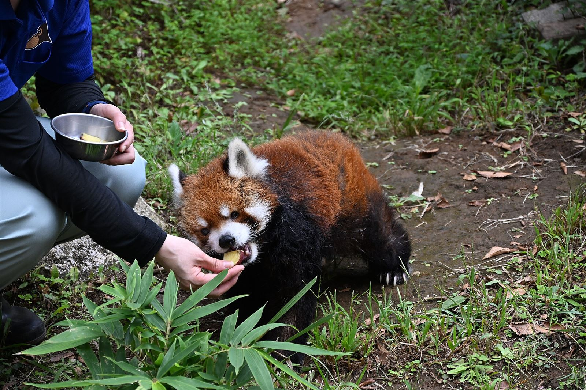
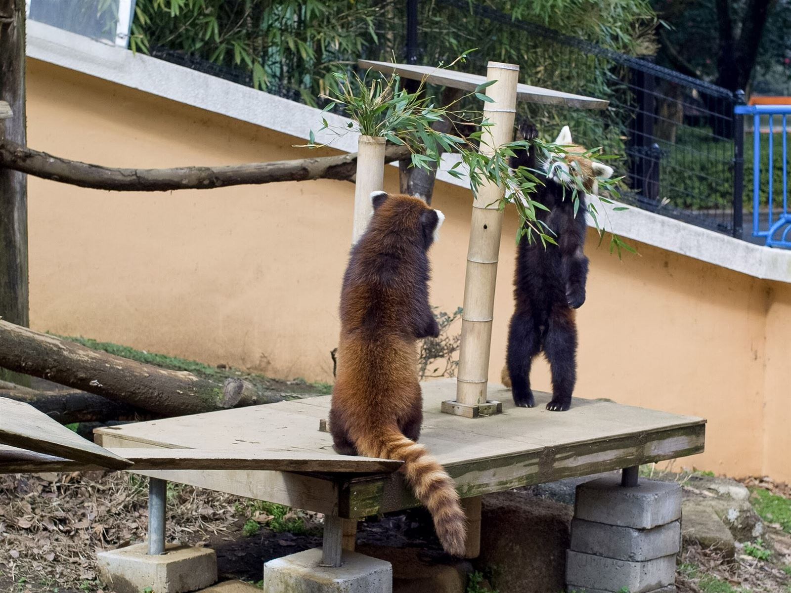
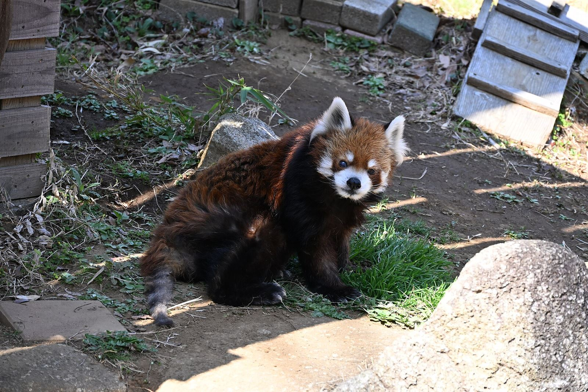
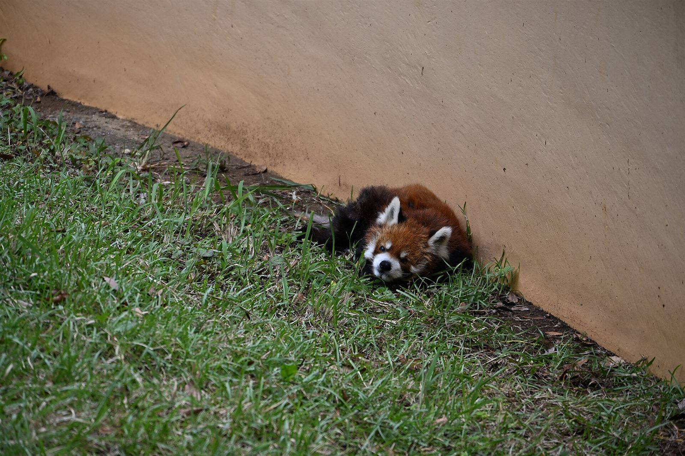
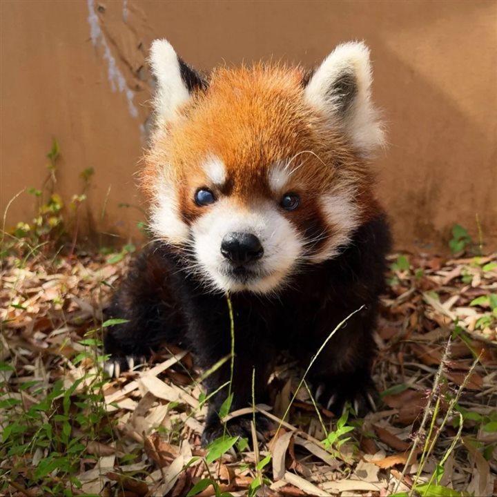
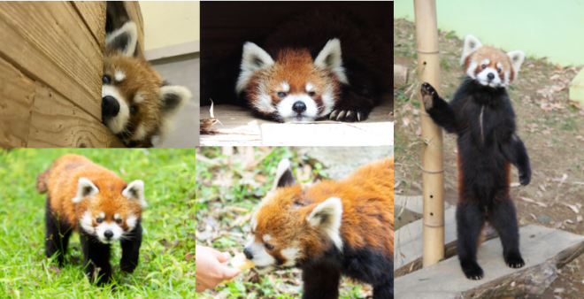
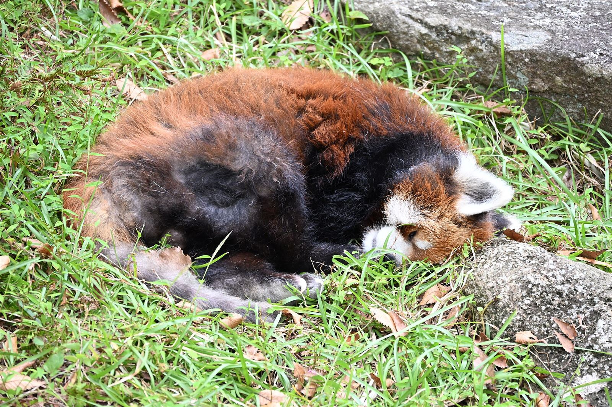

Born in Shizuoka
July 5th, Nihondaira Zoo. A tiny ball of rust-coloured fluff with absolutely no idea what was coming.

He stood up in 2005 and Japan lost its mind.
Twenty-one years later he's officially the oldest living red panda in captivity.

Spring, 2005. A small red panda in Chiba did something red pandas rarely bother to do. He stood up. Straight up, on two legs, for ten whole seconds. Then he did it again. And again.
How long Futa would hold the pose. Upright, paws dangling, completely unbothered.
Visitors at the peak of the 2005 boom. Nationwide news, a TV commercial, the works.
His age in human years, roughly. Still has a good appetite, according to his keepers.

July 5th, Nihondaira Zoo. A tiny ball of rust-coloured fluff with absolutely no idea what was coming.

Transferred to Chiba Zoological Park, the place he'd call home for the next two decades and counting.

Newspapers catch him on two legs. The clip goes everywhere. Queues form. A drinks brand puts him on TV. A whole country learns what a red panda is.

Not a one-time trick. Five years later he's still popping up on his hind legs like it's nothing.

Still standing at 17. By now he's a great-great-grandfather, with descendants spread across zoos.

He turns 20. The zoo even has a statue of him, standing, obviously. Few memes get carved in stone.

November 17th. Guinness World Records certifies him as the oldest living red panda in captivity.
On 17 November 2026, at a ceremony at Chiba Zoological Park, Guinness World Records made it official. Bad weather kept the crowds away, so the zoo shared the moment online instead, and the internet did what it does.
For context: most red pandas in human care don't make it anywhere near this age. Futa has a cataract in his right eye these days, but his keepers say he's still eating well and doing fine.
“The oldest living red panda in captivity is Futa (b. 5 July 2003) who is 23 years and 135 days old.” — the certificate




Every cycle has a dog. Every cycle has a frog. This one gets a 23-year-old red panda with a world record, a statue, great-great-grandkids and nothing left to prove.
Red pandas are listed as Endangered. In the wild they're losing their forests in the Eastern Himalayas to logging, grazing and roads, and they're still poached.
$FUTA donates to Red Panda Network, the non-profit that pays and trains local Forest Guardians in Nepal to monitor red pandas, restore habitat and stop poaching. Our donations are made through donate.gg.
See the charity on donate.gg